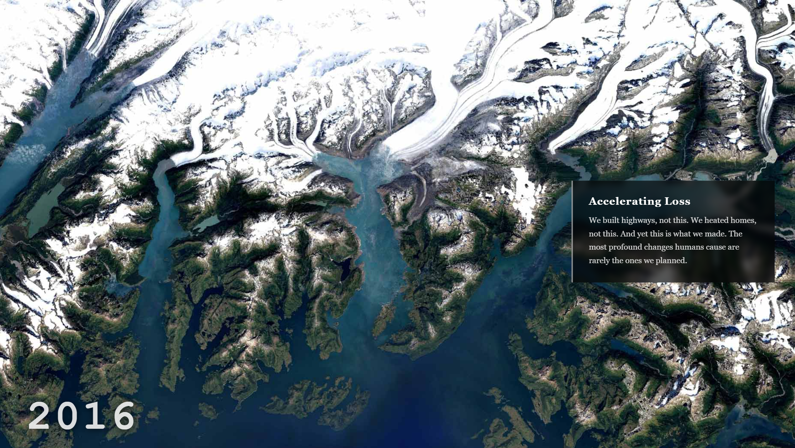

Experience the Project
See the interactive narrative in action — historical aerial photographs fading across time, from glaciers to cities, from then to now.

Concept
This project uses historical and modern photography to explore a simple but profound idea: the patterns of human experience never truly disappear — they just take on new shapes. Empires rise and fall. Relationships bloom and collapse. And all the while, the land beneath us quietly keeps score.
By layering photographs across time — from sweeping aerial views of glaciers retreating to cities sprawling outward — the project invites viewers to feel the weight of change without being told what to think. The images are chosen because they are universal: we have all felt the ache of something ending, or the uncanny sense that we have been here before.
Three Starting Ideas
The project is organized around three interlocking themes, each explored through a different photographic lens.
The Rhyme
Drawing on historical subway photography and progressively moving toward modern images, this thread traces how the patterns of rise, decay, and renewal echo across generations — in our cities and in our personal lives.
From Above
Aerial photography reveals connections invisible at street level. Glaciers retreating. Cities sprawling. The same geometry appears in a 1940s suburb and a modern solar farm. Past, Present, and Future converge into one continuous shape.
Flip Your Perspective
Sometimes the only way to find the positive is to literally invert your view. This section encourages the audience to reframe what they see — in the photographs, and in their own experiences.
The Project Pivot
Honest process is part of good design. Halfway through developing this project, the subject matter changed — and that shift is worth naming directly.
Why I Changed Direction
The subway imagery was visually compelling, but ultimately too interior — too confined to capture the scale of what I wanted to say. After discovering a set of high-quality aerial photographs documenting a retreating glacier and the explosive growth of Las Vegas, it became clear: these images carry the weight the concept demands. The impact humanity has had on this Earth is visible from the sky in a way it simply isn't underground. Switching mid-project was the right call.
The core thesis — that history rhymes, that our personal experiences mirror planetary ones — actually became stronger after the pivot. A melting glacier and a spreading city say something about time and consequence that no subway platform ever could.
Interactive Design
The interactive layer is where the concept comes alive. Several elements are planned or in progress:
- Crossfade transitions between historical and modern photographs, so that images literally bleed into one another — visualizing the "rhyme" rather than just describing it.
- Chronological timeline running along the edge of the page, giving viewers a clear sense of temporal direction as images age progressively from present to past.
- Image citations presented creatively at the close of the experience — integrated into the design rather than relegated to a footnote.
- Word timing refinement — based on roommate feedback, text overlays will be re-synced so that key words appear at the exact moment they land emotionally with the image.
Peer Feedback
After sharing an early prototype with roommates, three pieces of concrete feedback shaped the next iteration:
- The image crossfade effect resonated immediately — the sense of one era dissolving into another felt right and emotionally legible.
- One text element was appearing out of sync with its corresponding image. Timing needs to be recalibrated so the word lands at the right moment.
- A timeline along the edge of the scroll would help orient viewers, making it explicit that images grow older as you move through the experience.
What's Next
The project is actively in development. Immediate next steps include sourcing and clearing rights for the aerial glacier and Las Vegas photography, refining the crossfade timing, implementing the edge timeline feature, and designing the citation display at the project's close.
The larger goal — making viewers feel that their most private, lonely experiences are actually profoundly shared — remains the emotional north star of everything that comes next.